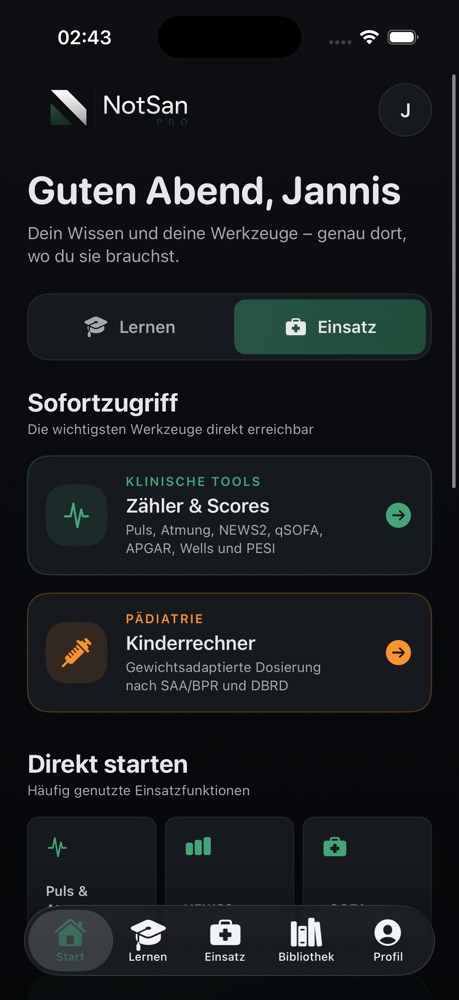
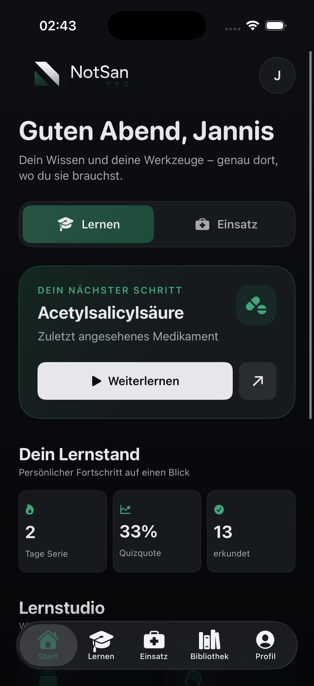
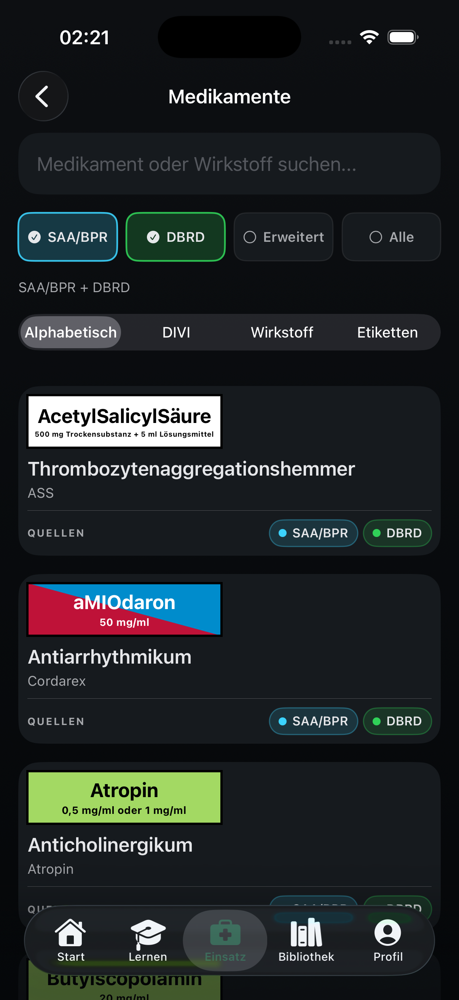
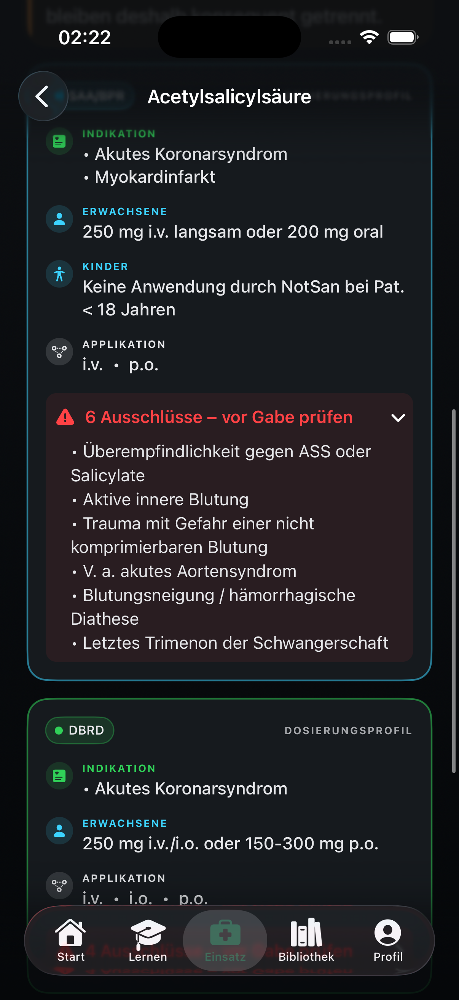
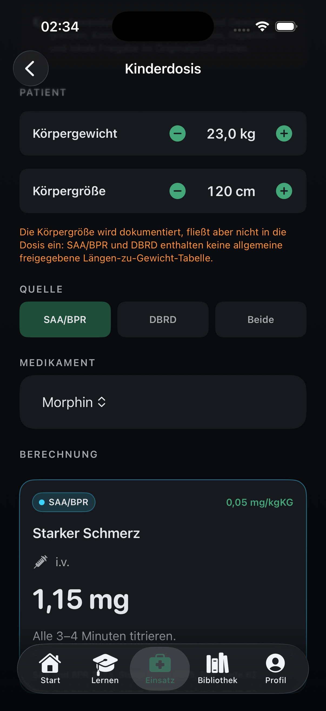
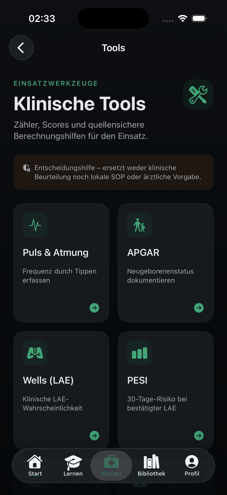
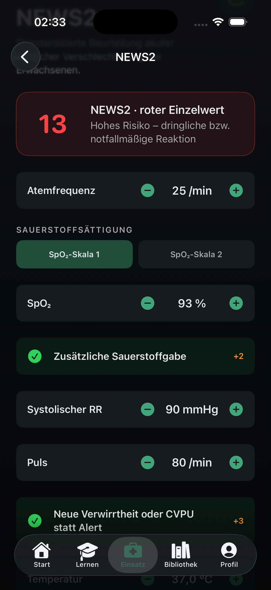
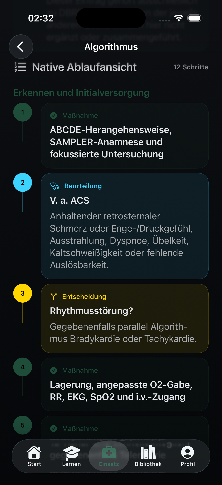
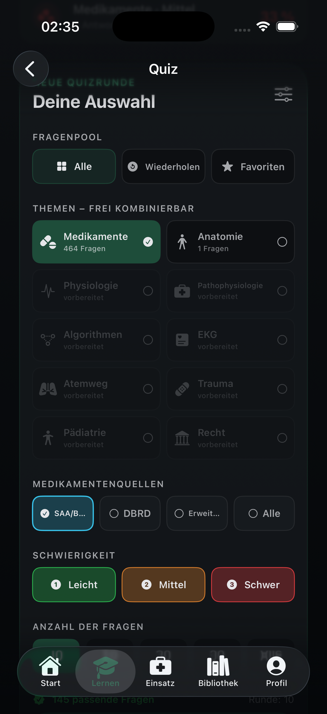
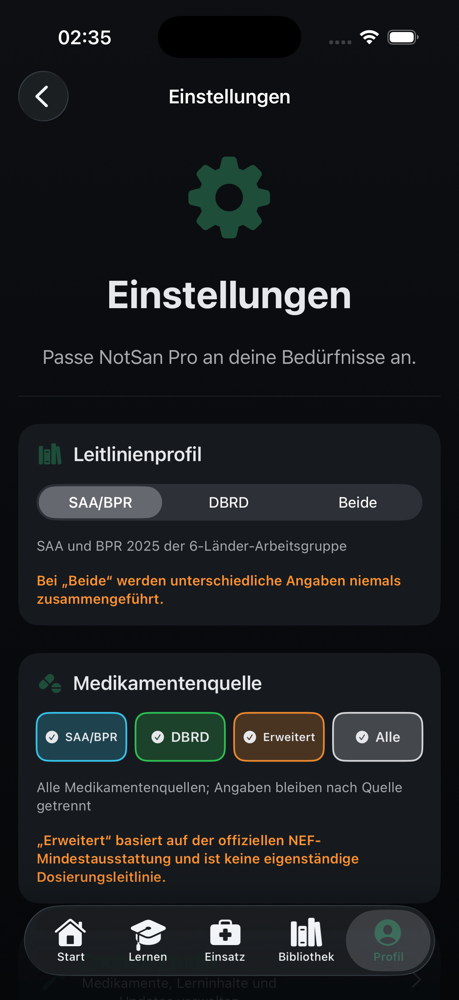

Präklinische Notfallmedizin
Die digitale Plattform für den Rettungsdienst.
Medikamente. Leitlinien. Algorithmen. Scores. Kinderdosierung. Lernen. NotSan Pro bündelt einsatzrelevantes Wissen in einer hochwertigen App.


Plattform statt Nachschlagewerk
Ein System für Einsatz, Lernen und Fortbildung.
NotSan Pro ist nicht als einzelne Medikamentenliste gedacht, sondern als integrierte Arbeitsumgebung für präklinische Notfallmedizin.

Medikamente
Quellen getrennt. Unterschiede sichtbar.
NotSan Pro führt unterschiedliche Angaben nicht zusammen. SAA/BPR, DBRD und erweiterte Quellen bleiben getrennt und nachvollziehbar.
Dosierungsprofile
Schnellinformation oben. Details darunter.
Kompakte Informationen zu Indikation, Dosierung, Applikation und Warnungen stehen direkt am Anfang. Darunter folgen getrennte Quellenkarten und ein ausführlicher Lernbereich.


Pädiatrie
Pädiatrischer Dosierungsrechner.
Gewichtsadaptierte Berechnungen mit Berücksichtigung von Maximaldosen und getrennten Ergebnissen je Leitlinie.
Klinische Tools
Zähler, Scores und Entscheidungshilfen.
Puls- und Atemfrequenzzähler, APGAR, Wells-Score für LAE, PESI, NEWS2 und qSOFA sind als einsatznahe Werkzeuge integriert.


Scores
Nicht nur rechnen. Einordnen.
Scores werden nicht als bloße Zahlen angezeigt, sondern mit Risikoeinschätzung, farblicher Gewichtung und klarer Interpretation.
Algorithmen
Native Ablaufansicht statt PDF-Suche.
Algorithmen werden Schritt für Schritt dargestellt – mit Maßnahmen, Beurteilungen, Entscheidungen und klarer visueller Führung.


Lernen
Wissen gezielt aufbauen.
Quiz, Wissenslücken, Wiederholen, Favoriten und frei kombinierbare Themen machen NotSan Pro auch zu einer Lernplattform für Ausbildung und Fortbildung.
Qualität und Sicherheit
NotSan Pro ersetzt keine SOP – es macht Wissen zugänglich.
Lokale SOP, ärztliche Freigaben und gültige Leitlinien bleiben maßgeblich. NotSan Pro legt Wert auf klare Quellenhinweise, getrennte Leitlinienangaben, Warnhinweise und nachvollziehbare Darstellung.
Screenshots
Ein Produkt. Eine Designsprache.
